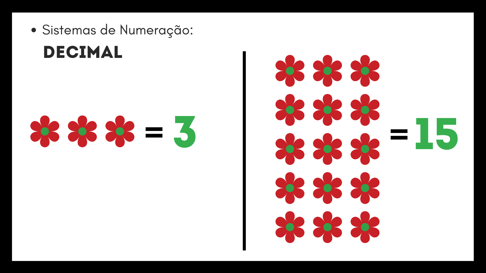
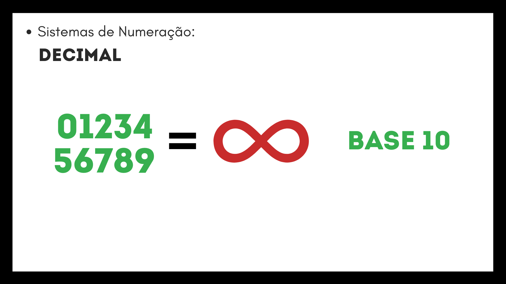
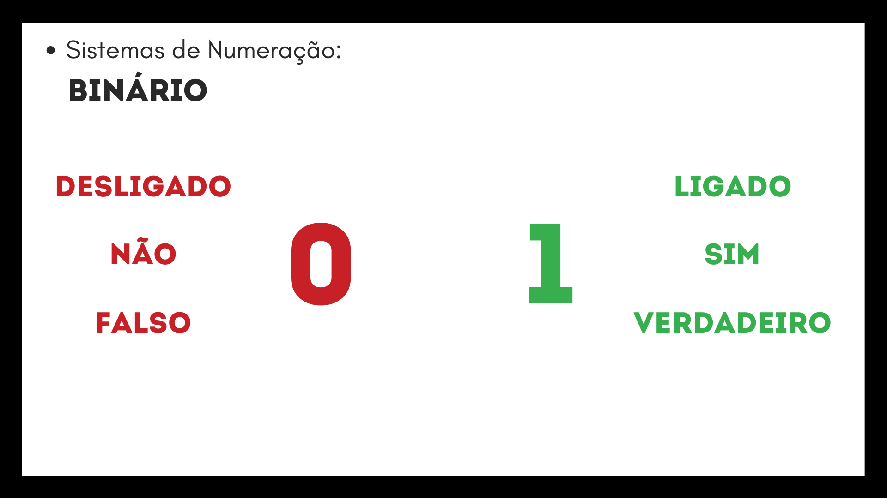

Sistemas de Numeração
- Introdução ao Conteúdo
Para entender esse conteúdo é necessário descolar o pensamento da forma tradicional de ver e enterder os números, pois número é um conceito abstrato que utilizamos de certos símbolos para representá-los, é preciso utilizar essa lógica na hora de realizar as transformações e operações, o que me fez confuso algumas vezes. Por esses motivos apresentei certa dificuldade na compreensão do conteúdo e principalmente na forma de contagem dos números, e para falar a realidade só entendi verdadeiramente esse conteúdo quando fiz o portfólio, agora sei até o 10 de cor em binários.
- Decimais
Sistemas de numeração são grupos de símbolos com valores que representam quantidades.
Os símbolos que geralmente usamos para descrever quantidades de algo são os números.
Esses números que usamos no dia-a-dia são do sistema decimal com os algarismos 0,1, 2, 3, 4, 5, 6, 7, 8, e 9,
com eles escrevemos qualquer quantidade.
Como é possível analisar na imagem a seguir.

Essa é a forma mais comum de contar e escrever os números, os valores escritos com ela estão na base 10,
pois usam 10 símbolos para serem contados e escritos.
Com apenas 10 algarismos chegamos ao infinito!

- Binários
É possível escrever os números utilizando apenas dois algarismos 0 e 1, mas como?
É fácil, preste atenção na tabela a seguir.
| Decimal |
Binário |
| 0 |
0 |
| 1 |
1 |
| 2 |
10 |
| 3 |
11 |
| 4 |
100 |
| 5 |
101 |
| 6 |
110 |
| 7 |
111 |
| 8 |
1000 |
É o mesmo funcionamento dos decimais, quando uma casa “enche” uma nova é aberta,
por exemplo quando chegamos no 9 é preciso criar mais uma casa e começar do zero,
aí vem o 10. No caso dos binários, quando temos o 111 e todas as casas estão cheias,
elas são esvaziadas e é acrescentado mais uma, 1000.
Os números escritos apenas com 0 e 1 estão na base 2.

- Octais
No sistema octal são utilizados 8 algarismos para escrever os números, são eles 0, 1, 2, 3, 4, 5, 6 e 7 ou seja base 8.
Vamos ver como funciona.
| Decimal |
Octal |
| 0 |
0 |
| 1 |
1 |
| 2 |
2 |
| 3 |
3 |
| 4 |
4 |
| 5 |
5 |
| 6 |
6 |
| 7 |
7 |
| 8 |
10 |
| 9 |
11 |
| 10 |
12 |
| 11 |
13 |
| 12 |
14 |
| 13 |
15 |
| 14 |
16 |
| 15 |
17 |
Todos esses sistemas funcionam da mesma forma onde dependendo da posição do número ele tem um valor diferente.
Esses são sistemas posicionais. E nesse caso utilizamos apenas os 8 primeiros números para escrever.
- Hexadecimais
No sistema hexadecimal são utilizados mais do que 10 algarismos para escrever os números, são utilizados números e letras,
0, 1, 2, 3, 4, 5, 6, 7, 8, 9, A, B, C, D, E, F. Vamos ver como funciona.
| Decimal |
Hexa |
| 0 |
0 |
| 1 |
1 |
| 2 |
2 |
| 3 |
3 |
| 4 |
4 |
| 5 |
5 |
| 6 |
6 |
| 7 |
7 |
| 8 |
8 |
| 9 |
9 |
| 10 |
A |
| 11 |
B |
| 12 |
C |
| 13 |
D |
| 14 |
E |
| 15 |
F |
Dessa forma é possível escrever grandes quantidades com poucos algarismos.
O sistema hexadecimal é muito utilizado para simplificar os números em binários e para escrever códigos de cores nos computadores.
Próximo Tópico